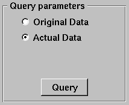
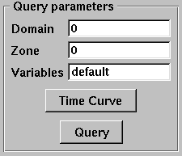
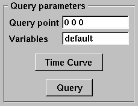
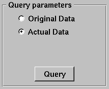
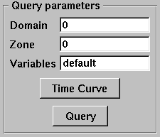
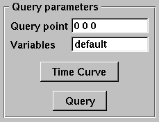

8.2. Query¶
VisIt allows you to gather quantitative information from the database being visualized through the use of queries. A query is a type of calculation that can either return values from the database or values that are calculated from data in the database. For example, VisIt’s Pick and Lineout capabilities (described later in this chapter) are specialized point and line queries that print out the values of variables in the database at points or along lines. In addition to point and line queries, VisIt provides database queries that return values that are based on all of the data in a database.
Some queries can even be executed for all of the time states in a database to yield a Curve plot of the query’s behavior over time. This feature will be covered in more detail a little later.
Fig. 8.5 Query window
VisIt’s queries are available in the Query Window (shown in Figure 8.5), which you can open by clicking the Query option in the Main Window’s Control menu. The Query Window consists of upper and lower areas where the upper area allows you to select a query and set its query parameters. The controls for setting a query’s parameters change as required and some queries have no parameters and thus have no controls for setting parameters. The bottom area of the window displays the results of the query once VisIt has finished processing it. The results for new queries are appended to the output from previous queries until you clear the Query results by clicking the Clear results button.
8.2.1. Query types¶
VisIt’s queries can be divided into three types: database queries, point queries, and line queries. Database queries usually calculate information for the database as a whole instead of concentrating on a single zone or node but some Pick-related database queries do concentrate on cells and nodes. Point queries calculate information for a point in the database and several types of variable picking queries fall into this category. Line queries calculate information along a line. Each type of query has different controls in the Query parameters area (see Figure 8.6) and as you highlight different queries, the controls in the Query parameters area may change.
 





Fig. 8.6 Query parameters area
Database queries provide a few different interfaces depending on the query. Many database queries require no additional input so they have no controls except for the Query button. Other database queries ask whether the query is to be performed with respect to the original data or the actual data, which is that data that is left in the plot after subsets have been removed and operators have transformed the data. Finally, some database queries ask for a specific domain number and zone or node number.
Point queries provide interfaces in the Query parameters area that allow you to enter a 3D point or a screen space point to use as the point for the query. Line queries provide an interface that lets you specify the start and end positions of the line as well as the number of sample points to consider along the length of the line. Nearly all query types allow you to provide additional variables to query in a Variables text field.
8.2.2. Built-in queries¶
8.2.2.1. Database Queries¶
- 2D area
- The 2D area query calculates the area of the 2D plot highlighted in the Plot list and prints the result to the Query results. VisIt can produce a Curve plot of this query with respect to time.
- 3D surfacea area
- The 3D surface area calculates the area of the plot highlighted in the Plot list and prints the result to the Query results. VisIt can produce a Curve plot of this query with respect to time.
- Area Between Curves
- The Area Between Curves query calculates the area between 2 curve plots. The plots that will serve as input to this query must both be highlighted in the Plot list or VisIt will issue an error message. Once the area has been calculated, the result is printed to the Query results.
- Centroid
- This query will calculate the centroid of a dataset. The contribution of each cell is calculated assuming its mass all lies at the center of the cell. If the query is performed on a Pseudocolor plot, the plot’s variable will be assumed to be density. If the query is performed on a plot such as a Mesh plot or FilledBoundary plot, uniform density will be used. The results are print to the Query results.
- Chord Length Distribution
- The Chord Length Distribution query calculates a probability density function of chord length over a two or three dimensional object. Axially symmetric objects (RZ-meshes) are treated as 3D meshes and chords are calculated over the revolved, 3D object. A statistical approach, casting uniform density, random lines, is used. The result of this query is a curve, which is outputted as a separate file. This curve is a probability density function over length scale. The name of the resulting file is printed to the Query results.
- Compactness
- The Compactness query calculates mesh metrics and prints them in the Query results.
- Cycle
- The Cycle query prints the cycle for the plot that is highlighted in the Plot list to the Query results.
- Distance from Boundary
- The Distance From Boundary query calculates how much mass is at a given distance away from the boundary of a shape. An important distinction for this query is that distance from the boundary (for a given point) is not defined as the shortest distance to the boundary, but simultaneously as all surrounding distances. Axially symmetric objects (RZ-meshes) are treated as 3D meshes and length scales are calculated over the revolved, 3D object. The implementation employs a statistical approach, with the casting of uniform density, random lines. The result of this query is a curve, which is outputted as a separate file. This curve contains the amount of mass as a function of length scale. Integrating the curve between P0 and P1 will give the total mass at distance between P0 and P1 (given the interpretation above). The name of the resulting file is printed to the Query results.
- Eulerian
- The Eulerian query calculates the Eulerian number for the mesh that is used by the highlighted plot in the Plot list. The results are printed to the Query results.
- Expected Value
- The Expected Value query calculates the integral of \(xf(x)dx\) for some curve f(x). The curve should be highlighted in the Plot list and prints the result to the Query results. This query is intended for distribution functions.
- Grid Information
- The Grid Information query prints information for each domain in a multi- domain mesh. The mesh type is printed as well as the mesh sizes. For structured meshes the size information contains the logical mesh dimensions (IJK sizes) and for unstructured meshes the size information contains the number of nodes and number of cells in the mesh. The query can optionally accept a get_extents parameter that will cause the spatial extents for each domain to be obtained. The query also accepts an optional get_ghosttype parameter that causes the ghost zone information for each domain to be obtained. Both the numerical value and list of or’d values for ghost values are obtained. All query outputs are printed to the Queryresults.
- Integrate
- The Integrate query calculates the area under the Curve plot that is highlighted in the Plot list and prints the result to the Query results.
- Kurtosis
- The Kurtosis query calculates the kurtosis of a normalized distribution function. The normalized distribution function must be represented as a Curve plot in VisIt. Kurtosis measures the variability of a distribution by comparing the ratios of the fourth and second central moments. The results are print to the Query results.
- L2Norm
- The L2Norm query calculates the L2Norm, or square of the integrated area, of a Curve plot. The Curve plot must be highlighted in the Plot list. The results are printed to the Query results.
- L2Norm Between Curves
- The L2Norm query takes two Curve plots as input and calculates the L2Norm between the 2 curves. Both Curve plots must be highlighted in the Plot list or VisIt will issue an error message. The results are printed to the Query results.
- Min
- The Min query calculates the minimum value for the variable used by the highlighted plot in the Plot list and prints the value and the logical and physical coordinates where the minimum value was found to the Query results.
- Mass Distribution
- The Mass Distribution query calculates how much mass occurs at different length scales over a two or three dimensional object. Axially symmetric objects (RZ-meshes) are treated as 3D meshes and length scales are calculated over the revolved, 3D object. The implementation employs a statistical approach, with the casting of uniform density, random lines. The result of this query is a curve, which is outputted as a separate file. This curve contains the amount of mass as a function of length scale. Integrating the curve between P0 and P1 will give the total mass between length scale P0 and length scale P1. The name of the resulting file is printed to the Query results.
- Max
- The Max query calculates the maximum value for the variable used by the highlighted plot in the Plot list and prints the value and the logical and physical coordinates where the maximum value was found to the Query results.
- MinMax
- The MinMax query calculates the minimum and maximum values for the variable used by the highlighted plot in the Plot list and prints the values and their logical and physical coordinates in the Query results.
- Moment of inertia
- This query will calculate the moment of inertia tensor for each cell in a three-dimensional dataset. The contribution of each cell is calculated assuming its mass all lies at the center of the cell. If the query is performed on a Pseudocolor plot, the plot’s variable will be assumed to be density. If the query is performed on a plot such as a mesh plot or FilledBoundary plot, uniform density will be used. The results are printed to the Query results.
- NodeCoords
- The NodeCoords query prints the node coordinates for the specified node and prints the values in the Query results.
- NumNodes
- The NumNodes query prints the number of nodes for the mesh used by the highlighted plot in the Plot list to the Query results.
- NumZones
- The NumZones query prints the number of zones for the mesh used by the highlighted plot in the Plot list to the Query results.
- Revolved surface area
- The Revolved surface area query revolves the mesh used by the highlighted plot in the Plot list about the X-axis and prints the plot’s revolved surface area to the Query results.
- Revolved volume
- The Revolved volume area query revolves the mesh used by the highlighted plot in the Plot list about the X-axis and print’s the plot’s volume to the Query results.
- Skewness
- The Skewness query calculates the skewness of a normalized distribution function. The normalized distribution function must be represented as a Curve plot in VisIt. Skewness measures the symmetry of a distribution using its second and third central moments. The results are print to the Query results
- Spatial Extents
- The Spatial Extents query calculates the original or actual spatial extents for the plot that is highlighted in the Plot list. Whether the original or actual extents are calculated is determined by setting the options in the Query parameters area. The spatial extents are printed to the Query results when the query has finished.
- Spherical compactness factor
- This query attempts to measure how spherical a three dimensional shape is. The query first determines what the volume of a shape is. It then constructs a sphere that has that same volume. Finally, the query positions the sphere so that the maximum amount of the original shape is within the sphere. The query returns the percentage of the original shape that is contained within the sphere. The results are print to the Query results. VisIt can produce a Curve plot of this query with respect to time.
- Time
- The Time query prints the time for the plot that is highlighted in the Plot list to the Query results.
- Variable Sum
- The Variable Sum query adds up the variable values for all cells using the plot highlighted in the Plot list and prints the results to the Query results. VisIt can produce a Curve plot of this query with respect to time.
- Volume
- The Volume query calculates the volume of the mesh used by the plot highlighted in the Plot list and prints the value to the Query results. VisIt can use this query to produce a Curve plot of volume with respect to time.
- Watertight
- The Watertight query determines if a three-dimensional surface mesh, of the plot highlighted in the Plot list, is “watertight”, meaning that it is a closed volume with mesh connectivity such that every edge is incident to exactly two faces. This means that no edge can have a duplicate in the exact same position. The result of the query is printed in the Query results.
- Weighted Variable Sum
- The Weighted Variable Sum query adds up the variable values, weighted by cell size, for all cells using the plot highlighted in the Plot list and prints the results to the Query results. VisIt can produce a Curve plot of this query with respect to time.
- ZoneCenter
- The ZoneCenter query calculates the zone center for a certain cell in the database used by the highlighted plot in the Plot list. The cell center is printed to the Query results and the Pick Window.
8.2.2.2. Point Queries¶
- NodePick
- The NodePick query performs node picking at the specified world coordinate which, if used in 3D, need not be on the surface of a 3D dataset.The plot to be picked must be highlighted in the Plot list. Information about the picked node, if there is one, is printed to the Query results and the Pick Window.
- Pick
- The Pick query performs zone picking at the specified world coordinate which, if used in 3D, need not be on the surface of a 3D dataset.The plot to be picked must be highlighted in the Plot list. Information about the picked node, if there is one, is printed to the Query results and the Pick Window.
- PickByNode
- The PickByNode query performs node pick using the highlighted plot in the Plot list and specified domain and node values. You can give a global node number if you turn on the Use Global Node check box. A pick point is added to the vis window and the query results appear in the Query results and the Pick Window. Note: this is the query to use if you want to query the database for the value of a variable at a certain node. VisIt can produce a Curve plot of this query with respect to time.
- PickByZone
- The PickByZone query performs zone pick using the highlighted plot in the Plot list and specified domain and zone values. You can give a global node number if you turn on the Use Global ** **Zone check box. A pick point is added to the vis window and the query results appear in the Query results and the Pick Window. Note: this is the query to use if you want to query the database for the value of a variable at a certain cell. VisIt can produce a Curve plot of this query with respect to time.
8.2.2.3. Line Queries¶
- Lineout
- The Lineout query creates a new instance of the highlighted plot in the Plot list, applies a Lineout operator, and copies the plot to another vis window. The properties of the Lineout operator such as the start and end points are set using the controls in the Query parameters area of the Query Window. Creating Lineouts in this manner instead of using VisIt’s interactive lineout allows you to create 1D Curve plots from 3D databases.
8.2.3. Executing a query¶
VisIt has many queries from which to choose. You can choose the type of query to execute by clicking on the name of the query in the Queries list. The Queries list usually displays the names of all of the queries that VisIt knows how to execute. If you instead want to view a subset of the queries, grouped by function, you can make a selection from the Display as combo box. Once you have clicked on a query in the Query list, the Query parameters area updates to show the controls that you need to edit the parameters for the query. In the case of a point query like Pick, the only parameters you need to specify are the 3D point where VisIt will extract values and the names of the variables that you want to examine. Once you specify the query parameters, click the Query button to tell VisIt to process the query. Once VisIt has fulfilled your request, the query results are displayed in the Query results at the bottom of the Query Window.
8.2.4. Querying over time¶
Many of VisIt’s queries can be executed for every time state in the database used by the queried plot. The results from a query over time is a Curve plot that plots the query results with respect to time. The Query parameters area contains a Time Curve button when the selected query can be plotted over time. Clicking the Time Curve button executes the selected query for each time state in the database used by the plot highlighted in the Plot list. VisIt then creates a new Curve plot in a new vis window and uses the query results versus time as the curve data.
Fig. 8.7 Query Over Time Window
By default, querying over time will force VisIt to execute the selected query on every time state in the relevant database. If you want to restrict the number of time states used when querying over time or if you want to set some general options that also affect how time curves are created, you can set additional options in the Query Over Time Window (see Figure 8.7). If you want to open the Query Over Time Window, click on the Query over time option in the Controls menu in VisIt’s Main Window.
8.2.4.1. Querying over a time range¶
You can restrict the range of time states that are considered when VisIt is performing a query over time if you specify a start or end time state in the Query Over Time Window. To set a starting time state, click the Starting timestep check box and enter a new time state into the adjacent text field. To set an ending time state, click the Ending timestep check box and enter a new ending time state into the adjacent text field.
In addition to setting the starting and ending time states, you can also specify a stride so VisIt can skip frames in the middle and consider every Nth frame instead of every frame. If you want to specify a stride, enter a new stride into the Stride text field in the Query Over Time Window and click the Apply button.
8.2.4.2. Setting the axis title¶
When VisIt creates a new Curve plot, after having calculated a query over time, the horizontal axis label is labeled with the database cycles. If you prefer to think about time in terms of time state or simulation time then you can change the axis label by clicking one of the following radio buttons in the Query Over Time Window : Cycle, Time, Timestep.
8.2.4.3. Setting the time curve’s destination window¶
When VisIt creates a Curve plot using the results of a query over time, the Curve plot is placed in a vis window designated for Curve plots. If there is no vis window into which the Curve plot can be added, VisIt creates a new vis window to contain the Curve plot. If you want VisIt to always place the new Curve plot in a specific window, turn off the Use 1st unused window or create new one check box and enter a new window number into the Window# text field. After setting these options, subsequent Curve plots created by querying over time will be added to the specified vis window.